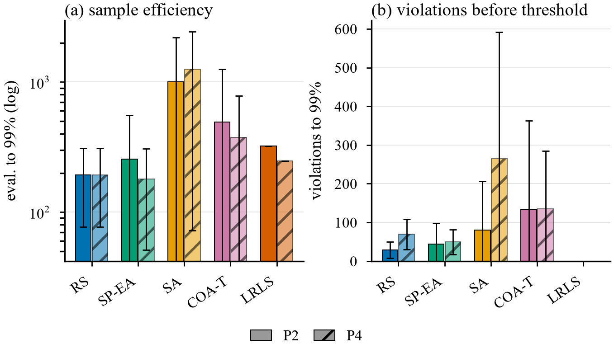
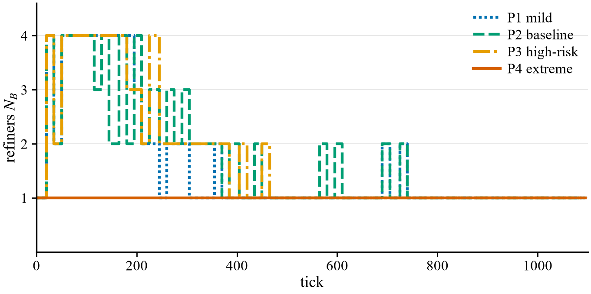

Anonymous Authors
Metaheuristics that alternate between exploration and exploitation usually make that switch with a scalar schedule — a temperature threshold, an entropy coefficient, or a cooling curve. We ask what changes when the switch is made by an agent instead. LRLS separates the two behaviours into heterogeneous roles: a high-entropy explorer population proposes candidate regions, a constraint-aware refiner population promotes them into verified feasible solutions, and a scheduler allocates budget between the two from global state. This paper contributes (i) an executable specification with a fixed state decomposition, six action primitives, a single reward structure and a hard-constraint safety layer; (ii) a dependency-free deterministic reference implementation; and (iii) a budget-matched evaluation against four baselines over five seeds. The result is deliberately not a speed claim: random search and a single-pool ablation reach 99% of the optimum 1.3–2.9× faster than LRLS. What role separation buys is constraint safety on the path — LRLS reaches the 99% threshold with zero hazard-zone evaluations in every profile and every seed, while every baseline pays 16–456 violations to reach the same quality, and a temperature-gated switch in the style of the Crayfish Optimization Algorithm is worse on both axes. We release the specification, the simulator and all experiment code.
Keywords: constrained optimisation; exploration–exploitation; metaheuristics; multi-agent; constraint handling; reproducibility
Exploration–exploitation balancing is usually implemented as a schedule [2]. Simulated annealing cools a temperature [3]; maximum-entropy RL anneals a coefficient [4]; bio-inspired optimisers gate between phases with a threshold. The schedule itself is a hyperparameter, tuned by hand, and it is the component that decides how much of the budget is spent looking versus confirming.
The Crayfish Optimization Algorithm (COA) [1] is a clear example: it models summer-resort/competition/foraging behaviour and switches phases with a temperature threshold. COA is a genuine metaheuristic and already performs a fixed trade-off. LRLS is not a competitor to COA as an optimiser; it asks a narrower question: what changes if the switching mechanism is not a threshold but an agent?
Our answer is structural rather than scalar. Two populations are made heterogeneous in observation and in action — not merely differently weighted — and a third controller decides, from global state, when to move budget from discovery to verification. The division of labour is bound to an explicit memory schema, a fixed action vocabulary and a hard-constraint safety layer, so the object is an implementable specification rather than a diagram.
Contributions.
Swarm and evolutionary metaheuristics. COA gates exploration and exploitation by temperature. Constraint handling in this family is typically a penalty function or a repair operator applied inside a single population. LRLS instead separates the repair into a dedicated population whose only job is verification, and disallows that population from exploring unmarked regions.
Hierarchical RL and options. Temporal abstraction separates action selection across levels. LRLS's six primitives are effectively a fixed option set and the scheduler is an option-selection policy, but the option inventory lives in a shared structured memory and carries feasibility labels.
Maximum-entropy RL. Entropy regularisation is applied here only to the explorer branch; the refiner is forbidden from receiving it. The separation is architectural, not a scalar trade-off.
Constrained optimisation benchmarks. Standard suites (CEC constrained benchmarks) evaluate final feasibility and objective value at a fixed budget. We adopt the same two axes — quality at budget and constraint violation — but report the violations accumulated before a quality threshold is reached, which is the quantity a safety layer actually controls.
Let Ω ⊂ ℝ2 be a compact search domain, f:Ω→[0,1] a bounded objective and r:Ω→[0,1] a constraint-violation measure with feasibility threshold ρ. A solver is a policy that, after a budget of N objective evaluations, returns an estimate x̂ of
Two quantities are in tension and are usually conflated: quality at budget, f(x̂)/f(x∗), and violation cost before quality is reached, V(τ) where τ is the first evaluation index at which f ≥ 0.99 f(x∗). A schedule that cools aggressively optimises the first and is indifferent to the second; a schedule that never leaves the feasible set optimises the second and stalls. LRLS is designed to bound the second at a controlled cost in the first, and §5 measures exactly that trade.
Roles. AC explorer: coarse sensing, large steps, high entropy, never outputs a feasible solution. AB refiner: fine sensing, small steps, constraint-aware, commits verified solutions. AS scheduler: allocates population sizes, assigns candidates, triggers resampling. M: shared memory pool.
State. s = [spos, sreward, srisk, smemory] — position and neighbourhood samples; objective value and neighbourhood best; constraint residual and boundary distance; memory summary. Branch rule: AC receives a coarse encoding with reduced risk and memory dimensions, AB the full fine-grained risk features. This asymmetry is what makes the populations heterogeneous rather than differently named.
Actions. {Wander, MarkCave, DigLocal, VigilScan, Migrate, Abandon} — large-step sampling; register a candidate; neighbourhood optimisation; evaluate constraints and project; leave and request reassignment; demote.
Reward. r = robj - λv Cv + λe ℋ - λm Cm, with Cv the violation cost, ℋ the exploration entropy, Cm migration overhead. AC raises λe and lowers λv; AB the reverse; AS is rewarded by improvement of the population's best feasible solution.
Memory. One record type carries id, type (candidate | verified), position, score, feasibility, risk, creator, last visit, decay and trajectory references. Candidates are evicted FIFO with score priority; verified solutions are retained with slow decay and demoted if risk rises.
Safety layer. (i) every refiner action is projected onto the feasible set, and a failed projection flags the region high-risk; (ii) if global feasibility drops below a threshold the scheduler raises the explorer share and restarts sampling; (iii) high-risk regions are never assigned to refiners; (iv) changing the objective resets the memory pool.
Scheduler. Observes habitat distribution, per-region yield, risk and budget; sets (NC, NB); assigns candidates; triggers full-domain resampling on stagnation. The specification permits a learned policy; the reference implementation ships a rule-based warm start only.
Procedure. One decision epoch of the reference implementation is given in Algorithm 1. The two role-specific branches are what a scalar schedule cannot express: exploration never filters by risk, and verification never accepts a candidate that failed projection.
Algorithm 1 One epoch (rule-based scheduler)
1 for each explorer c in N_C:
2 x = Wander(c) # big step
3 if f(x) >= tau: M += MarkCave(x)
4 for each candidate m in M:
5 if r(m) < rho: assign m to b
6 for each refiner b with m:
7 x = DigLocal(b, m) # local opt
8 x = VigilScan(x) # project
9 if feasible(x): vote(m, x)
10 if votes >= VOTE_NEED: promote(m)
11 if stalled: resample(), reset MThe safety layer is lines 5 and 8-9: a candidate that cannot be projected is never promoted, and a high-risk region is never assigned. Line 11 is the scheduler's only global lever.
A single offline HTML file, no dependencies, no build step. One deterministic solver pre-computes the timeline; every view reads the same frame through a pure render function. A seeded PRNG plus URL state parameters make a run reproducible; a tick scrub bar makes every intermediate state inspectable.
TABLE I. Reference implementation defaults.
| Parameter | Value | Meaning |
|---|---|---|
| Ticks | 1100 | pre-computed timeline |
| Terrain | 22×22 | synthetic objective with hard-constraint zones |
| Agents | 12 | mixed explorer/refiner population |
| τ (candidate threshold) | 0.38 | score needed to register a candidate |
| Consensus votes | 2 | votes required to promote a solution |
| Population bounds | 4 / 8 | refiner / explorer caps |
| λv / λm | 1.0 / 0.15 | violation and migration weights |
Three implementation details decide whether a solution is found at all: the local-search primitive performs a risk-gradient repulsion step before accepting a candidate; the verification primitive applies bounded constraint projection (at most three gradient steps) and allows re-inspection so consensus is not permanently blocked; and explorers do not pre-filter by risk, because over-filtering at discovery produced a degenerate build in which no feasible solution was ever reported.
Four operating profiles vary exploration coefficient, risk scaling, terrain complexity and stress (hazard growth). Table II lists them; complexity adds distractor peaks, stress inflates every hazard radius by the same factor.
TABLE II. Operating profiles. Complexity adds distractor peaks; stress inflates every hazard radius by the same factor.
| Profile | λe | risk | cmplx | stress | peaks | hzrd |
|---|---|---|---|---|---|---|
| P1 | 0.35 | 0.25 | 0.20 | 0.00 | 3 | 3 |
| P2 | 0.35 | 0.55 | 0.50 | 0.00 | 4 | 3 |
| P3 | 0.30 | 0.68 | 0.62 | 0.30 | 4 | 4 |
| P4 | 0.15 | 0.90 | 0.85 | 0.90 | 5 | 4 |
Every method runs on the same objective field, under the same feasibility gate risk(x,z) < 0.35 — the same test used to compute the reference optimum f∗ — and with the same evaluation budget: 39,911 objective evaluations per run, exactly what the LRLS solver consumes in 1,100 ticks with 12 agents. Each configuration is repeated over five seeds; we report mean ± s.d.
Baselines. RS: uniform random search, keeping the best feasible sample. SA: simulated annealing [3] with a fixed geometric schedule T0=0.30 → T1=10-3, Gaussian proposal and Metropolis acceptance — the standard fixed-temperature control. COA-T: a temperature-gated two-phase switch in the style of COA — large jumps while T > T∗, local steps below — i.e. the mechanism this work replaces with an agent. SP-EA: a single population of 12 agents with a globally annealed entropy coefficient, no role separation and no scheduler; an ablation of the architectural claim.
Metrics. (a) evaluations to reach 99% of f∗; (b) constraint violations accumulated before that threshold. The second metric is the one a safety layer is supposed to move, and it is not implied by the first.
TABLE III. Budget-matched results, 5 seeds. ev = evaluations to reach 99% of f∗; vio = violations accumulated before that threshold.
| P | Metric | RS | SP-EA | SA | COA-T | LRLS |
|---|---|---|---|---|---|---|
| P1 | ev | 193 | 111 | 1115† | 1987 | 327 |
| vio | 16 | 16 | 94 | 456 | 0 | |
| P2 | ev | 193 | 255 | 1005† | 494 | 323 |
| vio | 29 | 44 | 80 | 134 | 0 | |
| P3 | ev | 193 | 255 | 1169† | 494 | 302 |
| vio | 42 | 56 | 128 | 148 | 0 | |
| P4 | ev | 193 | 179 | 1260† | 374 | 248 |
| vio | 69 | 49 | 265 | 135 | 0 |
† SA reached the threshold in only 3–4 of 5 seeds.

Negative result on sample efficiency. Random search and the single-pool ablation reach 99% in 111–255 evaluations — 1.3–2.9× faster than LRLS (248–327). We do not claim otherwise. On a 22×22 surface with a smooth objective, uniform sampling is a strong baseline, and any method that spends budget on verification pays for it.
Positive result on constraint safety. LRLS reaches the 99% threshold with zero evaluations inside a hazard zone in every profile and every seed. Every baseline pays 16–456 violations to reach the same quality. The ordering matters: LRLS's violations accumulate after a feasible optimum is secured, not before it.
The comparison the specification was designed for. COA-style temperature gating is slower and less safe than LRLS in all four profiles (374–1987 evaluations, 135–456 violations), and it is the most sensitive to profile difficulty: its evaluation count swings by 5× across profiles, while LRLS stays within 1.3×. Simulated annealing is dominated on both axes and fails to reach the threshold in one or two of five seeds.
What the scheduler actually does. Fig. 2 shows the allocation trace. The scheduler does not sit at a fixed split: exploratory capacity moves between 4 and 7 agents and verification capacity between 1 and 4 as candidates accumulate and are consumed. In P4 the refiner count stays at 1 for the whole run — not by choice but because the risk gate refuses to assign the discovered regions, which is the safety layer overriding the scheduler. That is the intended failure mode: under extreme risk the system degrades to exploration-only rather than sending refiners into hazards.

Mechanism. Explorers may sample hazard zones — biasing the exploration signal would defeat its purpose — but a candidate becomes a solution only after the refiner's bounded projection succeeds, and the scheduler never assigns high-risk regions to refiners. The scheduler's contribution is therefore not "smarter search" but sequencing: it decides when verification capacity is worth more than discovery capacity.
Per-seed detail. Table IV gives every seed for the hardest profile (P4), as (evaluations to reach 99% of the optimum, violations before that point). The zero-violation property of LRLS is not an average over lucky seeds: it holds in all five, while the spread across seeds for the baselines is large enough that their means should be read as indicative.
TABLE IV. Per-seed detail for P4, as (evaluations to 99%, violations before it).
| Method | s1 (ev, vio) | s2 | s3 | s4 | s5 |
|---|---|---|---|---|---|
| RS | (209, 71) | (224, 87) | (74, 30) | (95, 34) | (362, 124) |
| SP-EA | (84, 28) | (55, 19) | (131, 31) | (274, 81) | (353, 88) |
| SA | (1608, 268) | (2747, 725) | (10, 0) | (677, 67) | (-, 0) |
| COA-T | (47, 18) | (163, 52) | (49, 13) | (683, 257) | (929, 333) |
| LRLS | (248, 0) | (248, 0) | (248, 0) | (248, 0) | (248, 0) |
It establishes that, on a synthetic constrained surface at a fixed evaluation budget, role separation trades 1.3–2.9× sample efficiency for zero-violation convergence, and that a temperature-gated switch is worse on both axes under this constraint encoding. It does not establish superiority over learned schedulers (SAC/PPO/MAPPO), over COA on the standard constrained benchmark suites, or on any physical system. Five seeds support a mean and a standard deviation; they do not support a significance test, and none is reported.
Why random search is a strong baseline here. On a smooth two-dimensional surface with one dominant basin, uniform sampling is close to optimal per evaluation: the chance that a uniform sample lands within ε of the optimum scales as ε2 in the sample count, with no momentum to fight. Any method that spends evaluations on verification — refining a candidate, re-checking a constraint — pays a constant factor. Reporting this plainly matters, because a role-separated method that also claimed a speed win on such a surface would be reporting a measurement artefact.
What the scheduler contributes, and what it does not. The scheduler does not make search smarter; it sequences capacity. In P2 it moves verification capacity from 1 to 4 agents as candidates accumulate. In P4 the risk gate holds it at 1 for the entire run and the system degrades to exploration-only — a design decision, not a bug: sending refiners into a region that cannot be projected produces violations without producing solutions. A scalar temperature cannot express this asymmetry, because it has one knob while the problem has two capacities.
Implication for evaluation practice. Convergence plots against iterations hide the quantity a safety layer controls. Two solvers can reach the same final value while one of them crossed a hazard zone two hundred times on the way. We therefore recommend reporting violations accumulated before a quality threshold, not only the total over the run: the total conflates "paid early to find the region" with "paid after the answer was already known", and these imply very different deployment risk.
The central hypothesis is untested. The shipped scheduler is a rule-based warm start. Whether a learned scheduler beats fixed temperature or entropy annealing is exactly the question this specification is meant to make falsifiable, and no experiment here answers it.
One surface, one constraint encoding. The zero-violation result is a property of hazard zones with a hard gate and of a projection operator that is cheap to evaluate. Domains where feasibility is expensive to test, or where the feasible set is disconnected, may behave differently.
Baselines are deliberately simple. SAC, PPO, MAPPO and COA on standard benchmark suites are not compared; the four baselines here are the ones a reviewer would demand first, not the strongest possible.
No embodiment. The multi-robot extension is a design. Gossip delay, packet loss and actuator noise are not simulated.
A schedule is a scalar; a scheduler is a decision. LRLS makes the switching decision an explicit agent with its own observation, budget and safety constraints, and ships an implementation in which every intermediate state can be inspected. On a budget-matched comparison it is slower than random search — and the only method that reaches the optimum having never entered a hazard zone, while the temperature-gated alternative it targets is worse on both axes.
The next step is the one the specification was built to enable: replace the rule-based warm start with a learned scheduler and test whether it beats fixed temperature and entropy annealing. That is a falsifiable claim, and it is not made here.
Reproducibility. Specification, simulator, figures and all experiment code are archived at DOI 10.5281/zenodo.23984055 and are released publicly on acceptance.
[1] H. Jia, H. Rao, C. Wen, and S. Mirjalili, "Crayfish Optimization Algorithm," Artificial Intelligence Review, vol. 56, no. Suppl 2, pp. 1919-1979, 2023, doi: 10.1007/s10462-023-10520-4.
[2] L. P. Kaelbling, M. L. Littman, and A. W. Moore, "Reinforcement Learning: A Survey," Journal of Artificial Intelligence Research, vol. 4, pp. 237-285, 1996.
[3] S. Kirkpatrick, C. D. Gelatt, and M. P. Vecchi, "Optimization by Simulated Annealing," Science, vol. 220, no. 4598, pp. 671-680, 1983.
[4] T. Haarnoja, A. Zhou, P. Abbeel, and S. Levine, "Soft Actor-Critic: Off-Policy Maximum Entropy Deep Reinforcement Learning with a Stochastic Actor," in Proc. ICML, 2018.
[5] J. Schulman, F. Wolski, P. Dhariwal, A. Radford, and O. Klimov, "Proximal Policy Optimization Algorithms," arXiv:1707.06347, 2017.
[6] C. Yu et al., "The Surprising Effectiveness of PPO in Cooperative Multi-Agent Games," in Proc. NeurIPS, 2022.
[7] "LRLS-v1.1: A Specification and Reference Simulation for Dual-Agent Exploration-Exploitation under Hard Constraints," preprint, 2026, doi: 10.5281/zenodo.23984055.
[8] "Lobster Dual-Agent RL - Interactive Reference Simulator," single-file HTML reference implementation accompanying [7], 2026.